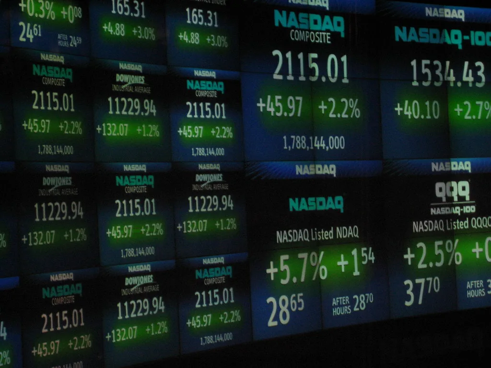

인공지능(AI) 기업 앤트로픽이 기업공개(IPO) 공모가를 주당 83달러로 확정하고 19일(현지시간) 미국 나스닥 시장에 상장한다. 공모가는 당초 제시했던 희망 범위인 70~78달러를 웃도는 수준으로, 이번 공모로 조달하는 자금은 약 813억 달러에 이르는 것으로 알려졌다. 이는 지난 6월 스페이스X가 세웠던 기록을 넘어서는 역대 최대 규모의 IPO다.
앤트로픽은 대화형 AI 모델 클로드를 개발한 회사로, 오픈AI 출신 연구진이 2021년 설립했다. 기업 고객을 중심으로 AI 모델과 코딩 도구 등의 수요가 빠르게 늘면서 짧은 기간에 대표적인 생성형 AI 기업으로 성장했다. 상장 후에는 'ANT'라는 종목 코드로 거래될 예정이다. 앤트로픽은 그동안 아마존과 구글 등 대형 기술 기업으로부터 대규모 투자를 유치하며 몸집을 키워 왔고, AI 안전성 연구를 회사의 핵심 가치로 내세워 왔다. 비상장 상태에서도 투자 유치 때마다 기업가치가 크게 뛰며 업계의 관심을 받아 왔다.

이번 공모에는 투자자들의 주문이 대거 몰린 것으로 전해졌다. 외신 보도에 따르면 청약 수요는 공급 물량의 7배에 가까운 수준이었고, 회사는 이에 맞춰 공모 주식 수를 당초 계획보다 늘리고 공모가도 희망 범위 상단 이상으로 끌어올렸다. 상장 직후 기업가치는 산정 기준에 따라 다르지만 1조 달러를 웃도는 수준으로 평가된다는 보도가 이어지고 있다.
앤트로픽 상장은 국내 증시에서도 변수로 주목받았다. 시장에서는 대형 AI 기업의 상장이 관련 산업 전반의 투자 심리에 영향을 줄 수 있다는 분석과 함께, 막대한 공모 자금이 한꺼번에 몰리면서 다른 기술주에서 자금이 빠져나갈 수 있다는 우려도 함께 제기됐다. 최근 엔비디아의 실적 발표 이후 반도체주가 등락을 거듭하는 가운데 수급 흐름에 미칠 영향이 관심을 끈다. 19일 국내 증시는 미국 반도체주 약세와 연준의 긴축 우려 속에 하락 출발할 것이라는 전망이 나왔는데, 증권가에서는 앤트로픽의 첫 거래 결과가 이후 국내 AI·반도체 관련 종목의 방향을 가늠하는 단서가 될 수 있다고 보고 있다.
이번 IPO는 AI 산업이 연구 단계를 넘어 본격적인 수익 사업으로 자리 잡고 있는지 시장이 평가하는 시험대로도 받아들여진다. 대형 언어모델 개발에는 데이터센터와 반도체 확보에 막대한 비용이 들어가는 만큼, 상장으로 확보한 자금은 연산 인프라 확충과 연구 개발에 주로 투입될 것으로 예상된다. 투자자들은 앞으로 매출 성장 속도와 수익성 개선 여부를 꼼꼼히 따질 것으로 보인다.
AI 업계의 경쟁 구도에도 변화가 예상된다. 상장 기업이 되면 분기마다 실적을 공개해야 하는 만큼 경영 정보의 투명성이 높아지는 반면, 단기 실적에 대한 시장의 압박도 커진다. 아직 비상장 상태인 경쟁사들의 상장 일정과 기업가치 산정에도 이번 공모 결과가 하나의 기준점이 될 수 있다는 관측이 나온다.
다만 상장 초기 주가 흐름은 예단하기 어렵다는 지적도 적지 않다. 대형 공모주는 상장 직후 변동성이 큰 경우가 많고, 금리와 통화정책 등 거시 환경도 기술주 주가에 큰 영향을 미친다. 첫 거래일의 시장 반응은 AI 산업에 대한 투자자들의 기대와 경계가 어느 수준인지를 보여주는 지표가 될 전망이다.